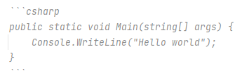
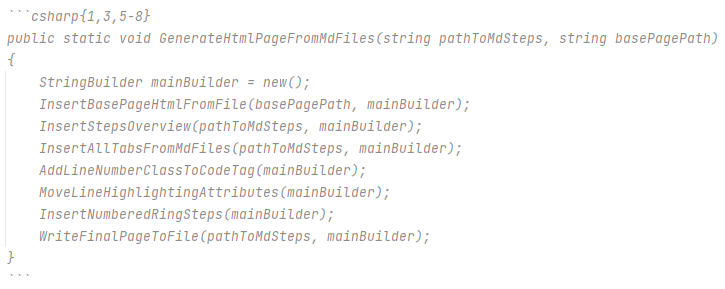

The markdown used for this CodeLabs should support all the standard syntax.
I have then added a few extra commands.
Code in code-blocks can be syntax highlighted by adding the programming language name after the three single quotes, which starts a code block.
The below:

results in this:
public static void Main(string[] args) {
Console.WriteLine("Hello world");
}
When applying code syntax highlighting, you can furthermore highlight specific lines in yellow by appending the information after the programming language name.
These can be used together, when separated by comma.
The following markdown

results in this output:
public static void GenerateHtmlPageFromMdFiles(string pathToMdSteps, string basePagePath)
{
StringBuilder mainBuilder = new();
InsertBasePageHtmlFromFile(basePagePath, mainBuilder);
InsertStepsOverview(pathToMdSteps, mainBuilder);
InsertAllTabsFromMdFiles(pathToMdSteps, mainBuilder);
AddLineNumberClassToCodeTag(mainBuilder);
MoveLineHighlightingAttributes(mainBuilder);
InsertNumberedRingSteps(mainBuilder);
WriteFinalPageToFile(pathToMdSteps, mainBuilder);
}
Sometimes you need to indicate a keyboard button, e.g. ctrlaltdel.
You can do this by surrounding the button text with <kbd>A</kbd> --> A.
A red circle with a number, like 3 is done by surrounding the number by two parentheses on either side: ( ( 3 ) ).